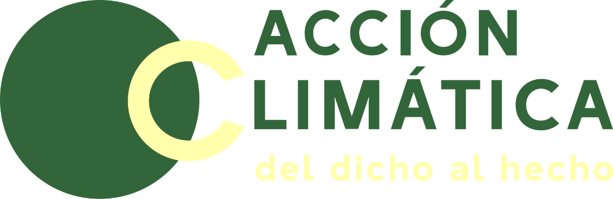

MUY PRONTO - Acción Climática publica su estudio mañana martes 24 de octubre de 2023. En el Día Internacional contra el Cambio Climático la alianza Accionclimaticachile.cl presenta una evaluación sobre el estado de implementación de la Ley Marco de Cambio Climático (LMCC) en Chile, dictada en 2022. El análisis es impulsado por la Fundación Ciudadanía Inteligente, el Centro de Resiliencia del Clima (CR2) y la Fundación Friedrich Ebert en Chile, con la colaboración del Centro de Derecho Ambiental (CDA), “Nuestra América Verde” (NAVE) y la ONG FIMA.